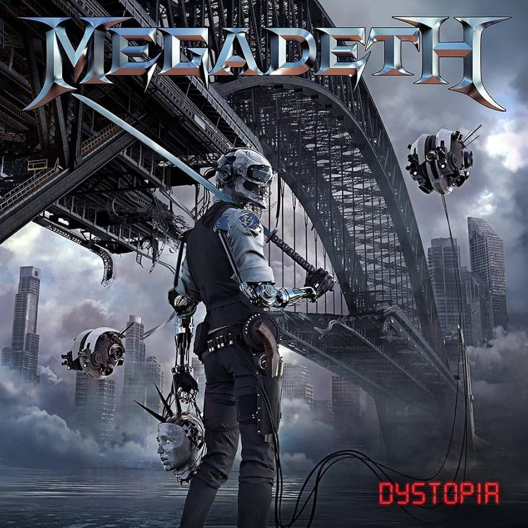
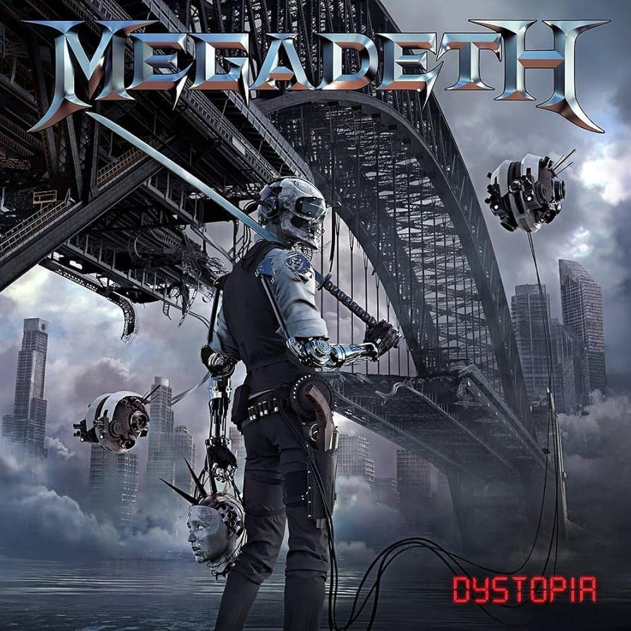
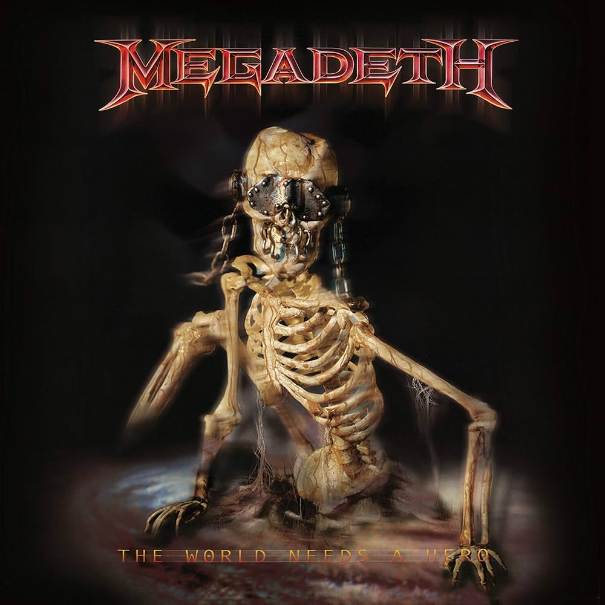
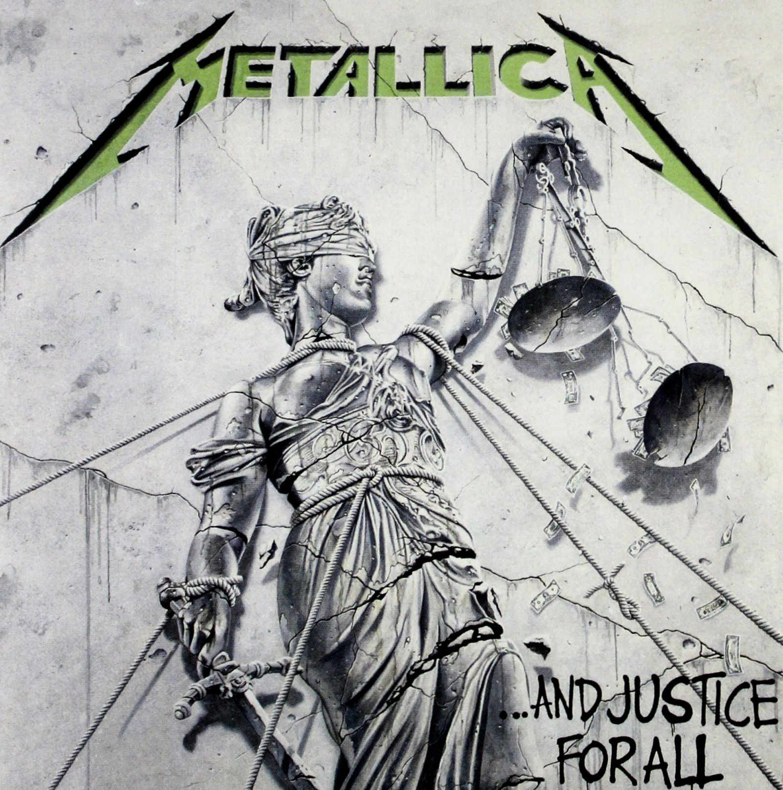

The Threat Is Real - Megadeth

The Four Horseman - Metallica

Peace Sells - Megadeth

Master Of Puppets - Metallica
Utwory wybrane wyłącznie na podstawie mojej własnej opinii z gatunku Thrash Metal. Zespoły na liście:
1. Megadeth
2. Metallica
3. Kreator
4. Slayer
1. Tornado Of Souls, Wykonawca - Megadeth, Album - Rust In Peace, Rok wydania albumu - 1990
2. Fade To Black - Metallica, Wykonawca - Metallica, Album - Ride The Lightning, Rok wydania albumu - 1984
3. Holy Wars... The Punishment Due, Wykonawca - Megadeth, Album - Rust In Peace, Rok wydania albumu - 1990
4. Whiplash, Wykonawca - Metallica, Album - Kill 'Em All, Rok wydania albumu - 1983
5. Lucretia, Wykonawca - Megadeth, Album - Rust In Peace, Rok wydania albumu - 1990
6. Seasons In The Abyss, Wykonawca - Slayer, Album - Seasons In The Abyss, Rok wydania albumu - 1990
7. Hail to the Hordes, Wykonawca - Kreator, Album - Gods of Violence, Rok wydania albumu - 2017
8. Almost Honest, Wykonawca - Megadeth, Album - Cryptic Writings, Rok wydania albumu - 1997
Utwory również godne polecenia

The Threat Is Real - Megadeth
The Four Horseman - Metallica
Peace Sells - Megadeth
Master Of Puppets - Metallica

For Whom The Bell Tolls - Metallica

Poison Was The Cure - Megadeth

Dread and the Fugitive Mind - Megadeth

One - Metallica